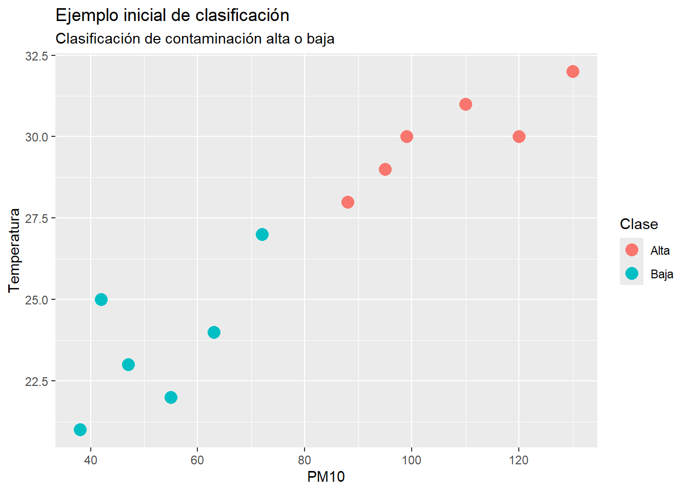

Code
pm10 <- 85
if (pm10 > 75) {
print("Contaminación alta")
} else {
print("Contaminación baja")
}[1] "Contaminación alta"Al finalizar este capítulo, el lector será capaz de:
El aprendizaje automático, también conocido como Machine Learning, es una rama de la inteligencia artificial que permite construir modelos capaces de aprender patrones a partir de datos.
En lugar de programar manualmente todas las reglas de decisión, proporcionamos datos a un algoritmo para que encuentre relaciones, regularidades o patrones útiles.
En este libro nos interesa aprender aprendizaje automático desde una perspectiva práctica. Es decir, no comenzaremos con desarrollos matemáticos extensos, sino con preguntas aplicadas, datos reales, código reproducible e interpretación de resultados.
La idea central será:
Aprender Machine Learning haciendo proyectos con datos reales.
En la programación tradicional, una persona escribe reglas explícitas.
Por ejemplo, supongamos que queremos clasificar la contaminación de un día usando la concentración de PM10.
pm10 <- 85
if (pm10 > 75) {
print("Contaminación alta")
} else {
print("Contaminación baja")
}[1] "Contaminación alta"En este caso, la regla fue escrita directamente por el programador:
Si PM10 > 75, entonces contaminación alta.Esto puede funcionar cuando el problema es simple. Sin embargo, muchos problemas reales no se pueden resolver con una sola regla.
Por ejemplo:
En estos casos, el comportamiento depende de muchas variables al mismo tiempo.
En aprendizaje automático no le damos al sistema una regla fija. Le damos datos.
Por ejemplo:
Datos históricos + algoritmo = modelo aprendidoUn modelo de aprendizaje automático aprende a partir de ejemplos.
Supongamos que tenemos información de varios días con datos de PM10, temperatura, humedad y una etiqueta que indica si la contaminación fue alta o baja.
datos <- data.frame(
dia = 1:12,
pm10 = c(42, 88, 55, 120, 63, 95, 38, 110, 72, 130, 47, 99),
temperatura = c(25, 28, 22, 30, 24, 29, 21, 31, 27, 32, 23, 30),
humedad = c(40, 35, 60, 30, 55, 33, 65, 29, 42, 28, 62, 34),
clase = c(
"Baja", "Alta", "Baja", "Alta",
"Baja", "Alta", "Baja", "Alta",
"Baja", "Alta", "Baja", "Alta"
)
)
datos dia pm10 temperatura humedad clase
1 1 42 25 40 Baja
2 2 88 28 35 Alta
3 3 55 22 60 Baja
4 4 120 30 30 Alta
5 5 63 24 55 Baja
6 6 95 29 33 Alta
7 7 38 21 65 Baja
8 8 110 31 29 Alta
9 9 72 27 42 Baja
10 10 130 32 28 Alta
11 11 47 23 62 Baja
12 12 99 30 34 AltaLa variable que deseamos predecir se llama clase.
datos$clase [1] "Baja" "Alta" "Baja" "Alta" "Baja" "Alta" "Baja" "Alta" "Baja" "Alta"
[11] "Baja" "Alta"Las variables que usaremos para hacer la predicción son:
datos[, c("pm10", "temperatura", "humedad")] pm10 temperatura humedad
1 42 25 40
2 88 28 35
3 55 22 60
4 120 30 30
5 63 24 55
6 95 29 33
7 38 21 65
8 110 31 29
9 72 27 42
10 130 32 28
11 47 23 62
12 99 30 34En este ejemplo, el objetivo del modelo sería aprender una relación aproximada como esta:
PM10, temperatura y humedad → clase de contaminaciónEn aprendizaje automático es importante distinguir entre:
Es la variable que queremos predecir.
También se le llama:
En el ejemplo anterior, la variable respuesta es:
claseporque queremos predecir si la contaminación es alta o baja.
Son las variables que usamos como entrada para el modelo.
También se les llama:
En el ejemplo anterior, las variables predictoras son:
pm10, temperatura, humedadEn una primera aproximación podemos hablar de tres grandes tipos de aprendizaje automático:
En este libro nos concentraremos principalmente en los dos primeros.
El aprendizaje supervisado se utiliza cuando tenemos una variable respuesta conocida.
Es decir, tenemos ejemplos históricos donde ya sabemos cuál fue el resultado.
Por ejemplo:
| Problema | Variables predictoras | Variable respuesta |
|---|---|---|
| Clasificar contaminación | PM10, temperatura, humedad | Alta o baja |
| Predecir lesionados en accidente | Hora, día, tipo de accidente | Con lesionados o sin lesionados |
| Clasificar tumor | Mediciones celulares | Benigno o maligno |
| Predecir ventas | Precio, mes, publicidad | Ventas |
Dentro del aprendizaje supervisado hay dos tareas muy importantes:
La clasificación se utiliza cuando la variable respuesta es categórica.
Por ejemplo:
Alta / Baja
Sí / No
Benigno / Maligno
Fatal / No fatal / Solo dañosEjemplos de clasificación:
En clasificación, el modelo asigna una observación a una categoría.
La regresión se utiliza cuando la variable respuesta es numérica.
Por ejemplo:
Precio de una casa
Temperatura
Ventas
Concentración de ozono
Número de accidentesEjemplos de regresión:
En regresión, el modelo predice un valor numérico.
El aprendizaje no supervisado se utiliza cuando no tenemos una variable respuesta conocida.
En lugar de predecir una etiqueta, buscamos patrones ocultos en los datos.
Por ejemplo:
Dos técnicas importantes de aprendizaje no supervisado son:
Un proyecto de aprendizaje automático casi nunca empieza directamente con el modelo.
Antes de modelar, necesitamos entender y preparar los datos.
Un flujo típico es:
1. Plantear el problema
2. Conseguir los datos
3. Entender las variables
4. Limpiar los datos
5. Explorar los datos
6. Dividir en entrenamiento y prueba
7. Entrenar el modelo
8. Evaluar el modelo
9. Interpretar los resultados
10. Comunicar hallazgosEn este libro seguiremos esta lógica.
Ahora construiremos una gráfica sencilla para visualizar el ejemplo de contaminación.
library(ggplot2)Warning: package 'ggplot2' was built under R version 4.5.3ggplot(datos, aes(x = pm10, y = temperatura, color = clase)) +
geom_point(size = 4) +
labs(
title = "Ejemplo inicial de clasificación",
subtitle = "Clasificación de contaminación alta o baja",
x = "PM10",
y = "Temperatura",
color = "Clase"
)
En la gráfica, cada punto representa un día.
El color indica si ese día fue clasificado como contaminación alta o baja.
Aunque este ejemplo es pequeño y didáctico, nos permite observar una idea fundamental:
Los modelos de aprendizaje automático buscan patrones en las variables predictoras para explicar o predecir una variable respuesta.
Un error común al iniciar en aprendizaje automático es evaluar el modelo con los mismos datos con los que fue entrenado.
Para evitarlo, normalmente dividimos los datos en dos partes:
El conjunto de entrenamiento se usa para construir el modelo.
El conjunto de prueba se usa para evaluar qué tan bien funciona el modelo con datos que no vio durante el entrenamiento.
set.seed(123)
n <- nrow(datos)
indices_entrenamiento <- sample(1:n, size = round(0.7 * n))
entrenamiento <- datos[indices_entrenamiento, ]
prueba <- datos[-indices_entrenamiento, ]
entrenamiento dia pm10 temperatura humedad clase
3 3 55 22 60 Baja
12 12 99 30 34 Alta
10 10 130 32 28 Alta
2 2 88 28 35 Alta
6 6 95 29 33 Alta
11 11 47 23 62 Baja
5 5 63 24 55 Baja
4 4 120 30 30 Altaprueba dia pm10 temperatura humedad clase
1 1 42 25 40 Baja
7 7 38 21 65 Baja
8 8 110 31 29 Alta
9 9 72 27 42 BajaEn este ejemplo pequeño, la división es solo ilustrativa. En problemas reales usaremos conjuntos de datos más grandes.
Antes de usar algoritmos más avanzados, podemos construir una regla sencilla para entender la idea de predicción.
datos$prediccion_regla <- ifelse(datos$pm10 > 75, "Alta", "Baja")
datos[, c("pm10", "clase", "prediccion_regla")] pm10 clase prediccion_regla
1 42 Baja Baja
2 88 Alta Alta
3 55 Baja Baja
4 120 Alta Alta
5 63 Baja Baja
6 95 Alta Alta
7 38 Baja Baja
8 110 Alta Alta
9 72 Baja Baja
10 130 Alta Alta
11 47 Baja Baja
12 99 Alta AltaAhora comparamos la clase real con la predicción.
tabla_confusion <- table(
Real = datos$clase,
Predicho = datos$prediccion_regla
)
tabla_confusion Predicho
Real Alta Baja
Alta 6 0
Baja 0 6Calculamos la exactitud:
exactitud <- mean(datos$clase == datos$prediccion_regla)
exactitud[1] 1La exactitud indica la proporción de observaciones clasificadas correctamente.
Este ejemplo todavía no es un modelo automático sofisticado, pero nos prepara para entender cómo evaluaremos modelos más adelante.
A lo largo del libro estudiaremos métodos como:
Cada método se estudiará con:
El aprendizaje automático permite construir modelos capaces de aprender patrones a partir de datos.
En este capítulo vimos que:
En el siguiente capítulo comenzaremos con una parte fundamental: la preparación de datos reales.